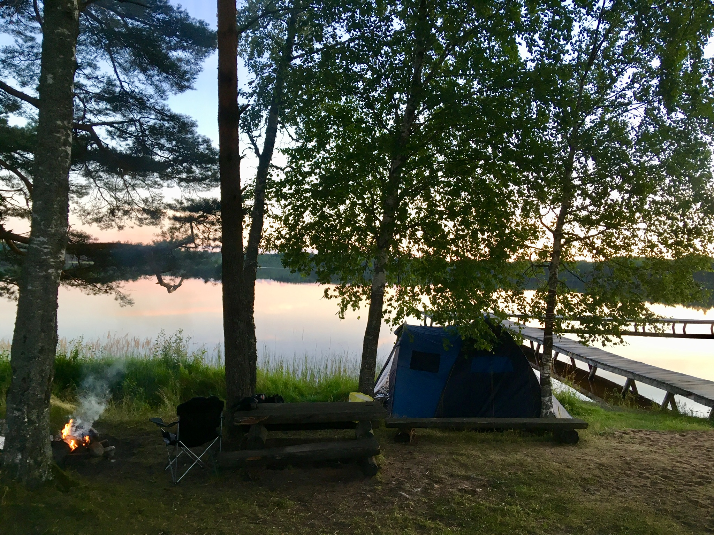

|  |
Koordinaadid L-EST 97 x: 6398631.9 y: 693923.2
Kirikumäe järv asub Võrumaal, Vastseliina alevikust 6,5km lõuna pool, Kirikumäe maastikukaitsealal.
Järv on populaarne suplus-, kalastus- ja puhkamispaik. Ümber Kirikumäe järve kulgeb 3,2 kilomeetrine matkarada.